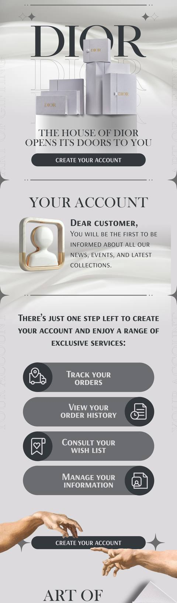
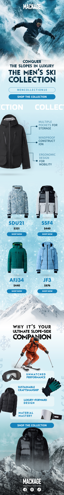
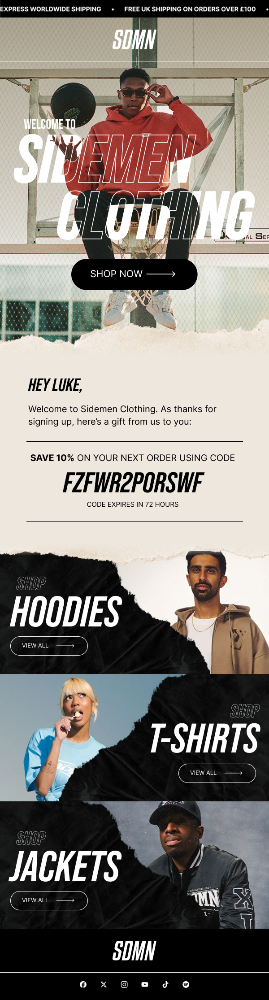
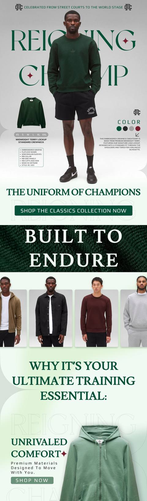
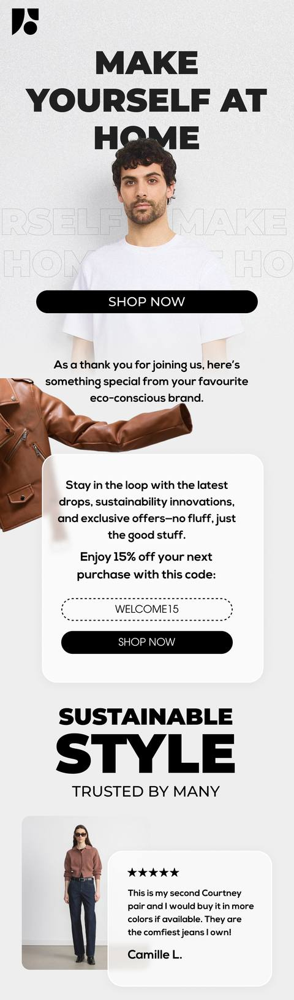
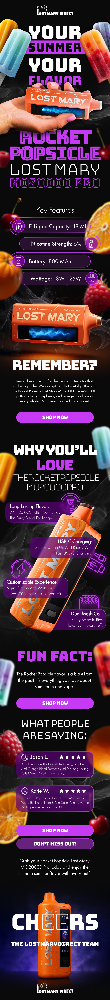
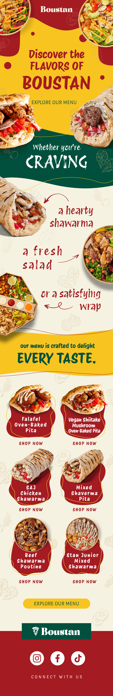
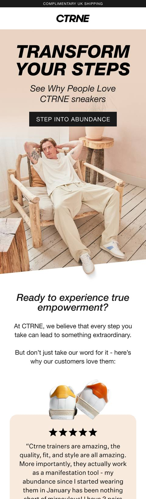
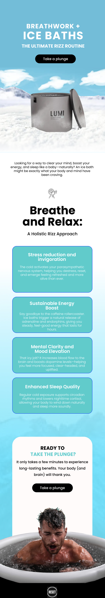

Campaigns
Every email has a job to do.
Design, copy and lifecycle logic, built to earn a place in an inbox that is already full. Here is a selection.









Scattered work, one system.
Scroll
Want your inbox presence to look like this?
Thirty minutes. We will look at what you sell, how people buy it and what your lifecycle programme does today.
We hit the number, or you don’t pay.
Your baseline and the target we take it to, agreed with you on the call — in writing, before any work starts.